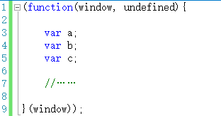
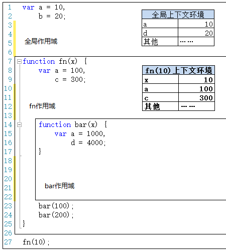
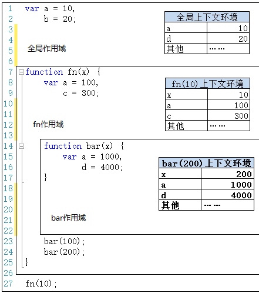

<!DOCTYPE html>
<html>
<head><meta name="generator" content="Hexo 3.8.0">
  <meta charset="utf-8">
  

  
  <title>作用域 | Gzqqqqq</title>
  <meta name="viewport" content="width=device-width, initial-scale=1, maximum-scale=1">
  
  
  
  <meta name="description" content="javascript中没有块级作用域。所谓的块级作用域激素和i大括号“{}”中间的语句例如if语句： 12345var i = 10;if(i &amp;gt; 1)&amp;#123;    var name = &apos;aaa&apos;;&amp;#125;console.log(name);  //&apos;aaa&apos; 再比如for语句： 12345for(var i = 0;i &amp;lt; 10;i++)&amp;#123;    //……&amp;#1">
<meta name="keywords" content="javascript">
<meta property="og:type" content="article">
<meta property="og:title" content="作用域">
<meta property="og:url" content="http://Gzqqqqq.github.io/public/2019/03/31/作用域/index.html">
<meta property="og:site_name" content="Gzqqqqq">
<meta property="og:description" content="javascript中没有块级作用域。所谓的块级作用域激素和i大括号“{}”中间的语句例如if语句： 12345var i = 10;if(i &amp;gt; 1)&amp;#123;    var name = &apos;aaa&apos;;&amp;#125;console.log(name);  //&apos;aaa&apos; 再比如for语句： 12345for(var i = 0;i &amp;lt; 10;i++)&amp;#123;    //……&amp;#1">
<meta property="og:locale" content="default">
<meta property="og:image" content="http://gzqqqqq.github.io/public/2019/03/31/作用域/作用域.png">
<meta property="og:image" content="http://gzqqqqq.github.io/public/2019/03/31/作用域/jQuery案例.png">
<meta property="og:image" content="http://gzqqqqq.github.io/public/2019/03/31/作用域/作用域1.png">
<meta property="og:image" content="http://gzqqqqq.github.io/public/2019/03/31/作用域/add1.png">
<meta property="og:image" content="http://gzqqqqq.github.io/public/2019/03/31/作用域/add2.png">
<meta property="og:image" content="http://gzqqqqq.github.io/public/2019/03/31/作用域/add3.png">
<meta property="og:image" content="http://gzqqqqq.github.io/public/2019/03/31/作用域/add4.png">
<meta property="og:image" content="http://gzqqqqq.github.io/public/2019/03/31/作用域/add5.png">
<meta property="og:image" content="http://gzqqqqq.github.io/public/2019/03/31/作用域/add6.png">
<meta property="og:image" content="http://gzqqqqq.github.io/public/2019/03/31/作用域/总图.png">
<meta property="og:image" content="http://gzqqqqq.github.io/public/2019/03/31/作用域/作用域链图.png">
<meta property="og:updated_time" content="2019-03-31T08:45:16.982Z">
<meta name="twitter:card" content="summary">
<meta name="twitter:title" content="作用域">
<meta name="twitter:description" content="javascript中没有块级作用域。所谓的块级作用域激素和i大括号“{}”中间的语句例如if语句： 12345var i = 10;if(i &amp;gt; 1)&amp;#123;    var name = &apos;aaa&apos;;&amp;#125;console.log(name);  //&apos;aaa&apos; 再比如for语句： 12345for(var i = 0;i &amp;lt; 10;i++)&amp;#123;    //……&amp;#1">
<meta name="twitter:image" content="http://gzqqqqq.github.io/public/2019/03/31/作用域/作用域.png">
  
    <link rel="alternate" href="/atom.xml" title="Gzqqqqq" type="application/atom+xml">
  
  
    <link rel="icon" href="/images/default-avatar.jpeg">
  
  
    <link href="//fonts.googleapis.com/css?family=Source+Code+Pro" rel="stylesheet" type="text/css">
  
  <link rel="stylesheet" href="/css/style.css">
  <link rel="stylesheet" href="/css/highlight.css">
</head>
</html>
<body>
  <div id="fullpage" class="mobile-nav-right">
    
      <div id="wrapper" title="图片来自网络">
    
    
      <header id="header">
  <div id="nav-toggle" class="nav-toggle"></div>
  <div class="head-box global-width">
    <nav class="nav-box nav-right">
      
        <a class="nav-item" href="/" title>首页</a>
      
        <a class="nav-item" href="/archives" title>归档</a>
      
    </nav>
  </div>
</header>
      <div id="middlecontent" title class="global-width sidebar-right">
        <section id="main"><article id="post-作用域" class="article global-container article-type-post" itemscope itemprop="blogPost">
  
    <header class="article-header">
      
  
    <h1 class="article-title" itemprop="name">
      作用域
    </h1>
  

    </header>
  
  <div class="article-meta">
    <a href="/2019/03/31/作用域/" class="article-date">
  <time datetime="2019-03-31T08:30:50.000Z" itemprop="datePublished">2019-03-31</time>
</a>
    
    
  <ul class="article-tag-list"><li class="article-tag-list-item"><a class="article-tag-list-link" href="/tags/javascript/">javascript</a></li></ul>

  </div>
  
    <span id="busuanzi_container_page_pv">
      本文总阅读量<span id="busuanzi_value_page_pv"></span>次
    </span>
  

  <div class="article-inner">
    
    <div class="article-content article-content-doorframe" itemprop="articleBody">
      
       
  	
  	  <h4 id="javascript中没有块级作用域。所谓的块级作用域激素和i大括号“-”中间的语句"><a href="#javascript中没有块级作用域。所谓的块级作用域激素和i大括号“-”中间的语句" class="headerlink" title="javascript中没有块级作用域。所谓的块级作用域激素和i大括号“{}”中间的语句"></a>javascript中没有块级作用域。所谓的块级作用域激素和i大括号“{}”中间的语句</h4><p>例如if语句：</p>
<div class="highlight-box" autocomplete="off" autocorrect="off" autocapitalize="off" spellcheck="false" contenteditable="true" data-rel="BASH"><figure class="iseeu highlight /bash"><table><tr><td class="gutter"><pre><span class="line">1</span><br><span class="line">2</span><br><span class="line">3</span><br><span class="line">4</span><br><span class="line">5</span><br></pre></td><td class="code"><pre><span class="line">var i = 10;</span><br><span class="line"><span class="keyword">if</span>(i &gt; 1)&#123;</span><br><span class="line">    var name = <span class="string">'aaa'</span>;</span><br><span class="line">&#125;</span><br><span class="line">console.log(name);  //<span class="string">'aaa'</span></span><br></pre></td></tr></table></figure></div>
<p>再比如for语句：</p>
<div class="highlight-box" autocomplete="off" autocorrect="off" autocapitalize="off" spellcheck="false" contenteditable="true" data-rel="BASH"><figure class="iseeu highlight /bash"><table><tr><td class="gutter"><pre><span class="line">1</span><br><span class="line">2</span><br><span class="line">3</span><br><span class="line">4</span><br><span class="line">5</span><br></pre></td><td class="code"><pre><span class="line"><span class="keyword">for</span>(var i = 0;i &lt; 10;i++)&#123;</span><br><span class="line">    //……</span><br><span class="line">&#125;</span><br><span class="line"></span><br><span class="line">console.log(i);   //10</span><br></pre></td></tr></table></figure></div>
<p>以上的例子都说明了javascript没有块级作用域的说法。声明在块内的变量在全局范围内依然可以访问大。<br>所以在编写代码的时候，不要再块内声明变量，要在代码一开始就声明好，避免发生歧义。</p>
<div class="highlight-box" autocomplete="off" autocorrect="off" autocapitalize="off" spellcheck="false" contenteditable="true" data-rel="BASH"><figure class="iseeu highlight /bash"><table><tr><td class="gutter"><pre><span class="line">1</span><br><span class="line">2</span><br><span class="line">3</span><br><span class="line">4</span><br><span class="line">5</span><br><span class="line">6</span><br></pre></td><td class="code"><pre><span class="line">var i = 0;</span><br><span class="line"><span class="keyword">for</span>(i; i &lt; 10 ;i++)&#123;</span><br><span class="line">    //……</span><br><span class="line">&#125;</span><br><span class="line"></span><br><span class="line">console.log(i);  //10</span><br></pre></td></tr></table></figure></div>
<h4 id="javascript除了全局作用域之外，只有函数可以创建的作用域。"><a href="#javascript除了全局作用域之外，只有函数可以创建的作用域。" class="headerlink" title="javascript除了全局作用域之外，只有函数可以创建的作用域。"></a>javascript除了全局作用域之外，只有函数可以创建的作用域。</h4><p>所以在声明变量的时候，全局代码要在代码前段就要声明好，函数中要在函数体一开始就声明好。除了这两个地方，其他地方都不要出现变量的声明。</p>
<hr>
<h3 id="作用域"><a href="#作用域" class="headerlink" title="作用域"></a>作用域</h3><p>作用域是一个很抽象的概念，类似于一个“地盘”</p>
<p></p>
<p>如上图，全局代码和fn、bar两个函数都会形成一个作用域。而且，<strong>作用域有上下级的关系，上下级关系的确定就看函数是在哪个作用域下创建的</strong>。例如，fn作用域下创建了bar函数，那么“fn作用域”就是“bar作用域”的上级。</p>
<p><strong>作用域最大的用处就是隔离变量，不同作用域下同名变量不会有冲突</strong>。</p>
<p>例如以上代码中，三个作用域下都声明了“a”这个变量，但是他们不会有冲突。各自的作用域下，用各自的“a”。</p>
<p>通过函数封装一个单独作用域的具体案例，jQuery源码：</p>
<p></p>
<p>jQuery源码的最外层是一个自动执行的匿名函数,包装一层匿名函数的原因是因为在jQuery源码中，声明了大量的变量，<strong>这些变量将通过一个函数被限制在一个独立的作用域中</strong>，而<strong>不会</strong>与全局作用域或者其他函数作用域的同名变量<strong>产生冲突</strong>。</p>
<hr>
<h3 id="作用域和上下文环境"><a href="#作用域和上下文环境" class="headerlink" title="作用域和上下文环境"></a>作用域和上下文环境</h3><p></p>
<p>如上图，除了全局作用域之外，每个函数都会创建自己的作用域，<strong>作用域在函数定义时就已经确定了。而不是在函数调用时确定。</strong></p>
<p>下面我们将按照程序执行的顺序，一步一步把各个上下文环境加上。</p>
<p><strong>第一步</strong>，在加载程序时，已经确定了全局上下文环境，并随着程序的执行而对变量就行赋值。</p>
<p></p>
<p><strong>第二步</strong>，程序执行到第27行，调用fn(10)，此时生成此次调用fn函数时的上下文环境，压栈，并将此上下文环境设置为活动状态。</p>
<p></p>
<p><strong>第三步</strong>，执行到第23行时，调用bar(100)，生成此次调用的上下文环境，压栈，并设置为活动状态。</p>
<p></p>
<p><strong>第四步</strong>，执行完第23行，bar(100)调用完成。则bar(100)上下文环境被销毁。接着执行第24行，调用bar(200)，则又生成bar(200)的上下文环境，压栈，设置为活动状态。</p>
<p></p>
<p><strong>第五步</strong>，执行完第24行，则bar(200)调用结束，其上下文环境被销毁。此时会回到fn(10)上下文环境，变为活动状态。</p>
<p></p>
<p><strong>第六步</strong>，执行完第27行代码，fn(10)执行完成之后，fn(10)上下文环境被销毁，全局上下文环境又回到活动状态。</p>
<p></p>
<p>最后我们可以把以上这几个图片连接起来看看。</p>
<p></p>
<p>作用域只是一个“地盘”，一个抽象的概念，其中没有变量。要通过作用域对应的执行上下文环境来获取变量的值。</p>
<p>同一个作用域下，不同的调用会产生不同的执行上下文环境，继而产生不同的变量的值。</p>
<p>所以，作用域中变量的值是在执行过程中产生的确定的，而作用域却是在函数创建时就确定了。</p>
<p>所以，<strong>如果要查找一个作用域下某个变量的值，就需要找到这个作用域对应的执行上下文环境，再在其中寻找变量的值。</strong></p>
<hr>
<h3 id="自由变量和作用域链"><a href="#自由变量和作用域链" class="headerlink" title="自由变量和作用域链"></a>自由变量和作用域链</h3><p>跨作用域取值：在A作用域中使用的变量x，却没有在A作用域中声明（即在其他作用域中声明的），对于A作用域来说，x就是一个<strong>自由变量</strong>。</p>
<div class="highlight-box" autocomplete="off" autocorrect="off" autocapitalize="off" spellcheck="false" contenteditable="true" data-rel="BASH"><figure class="iseeu highlight /bash"><table><tr><td class="gutter"><pre><span class="line">1</span><br><span class="line">2</span><br><span class="line">3</span><br><span class="line">4</span><br><span class="line">5</span><br><span class="line">6</span><br><span class="line">7</span><br></pre></td><td class="code"><pre><span class="line">var x = 10;</span><br><span class="line"></span><br><span class="line"><span class="keyword">function</span> <span class="function"><span class="title">fn</span></span>()&#123;</span><br><span class="line">    var b = 20;</span><br><span class="line">    </span><br><span class="line">    console.log(x + b);    //这里的x就是一个自由变量</span><br><span class="line">&#125;</span><br></pre></td></tr></table></figure></div>
<p>如上程序中，在调用fn()函数时，函数体中第6行。取b的值就直接可以在fn作用域中取，因为b就是在这里定义的。而取x的值时，就需要到另一个作用域中取。</p>
<p>有人说过要到父作用域中取，其实有时候这种解释会产生歧义。</p>
<p>例如：</p>
<div class="highlight-box" autocomplete="off" autocorrect="off" autocapitalize="off" spellcheck="false" contenteditable="true" data-rel="BASH"><figure class="iseeu highlight /bash"><table><tr><td class="gutter"><pre><span class="line">1</span><br><span class="line">2</span><br><span class="line">3</span><br><span class="line">4</span><br><span class="line">5</span><br><span class="line">6</span><br><span class="line">7</span><br><span class="line">8</span><br><span class="line">9</span><br><span class="line">10</span><br><span class="line">11</span><br><span class="line">12</span><br><span class="line">13</span><br></pre></td><td class="code"><pre><span class="line">var x = 10;</span><br><span class="line"><span class="keyword">function</span> <span class="function"><span class="title">fn</span></span>()&#123;</span><br><span class="line">    console.log(x);</span><br><span class="line">&#125;</span><br><span class="line"></span><br><span class="line"><span class="keyword">function</span> <span class="function"><span class="title">show</span></span>()&#123;</span><br><span class="line">    var x = 20;</span><br><span class="line">    </span><br><span class="line">    (<span class="function"><span class="title">function</span></span>()&#123;</span><br><span class="line">        f();        //10而不是20</span><br><span class="line">    &#125;)();</span><br><span class="line">&#125;</span><br><span class="line">show();</span><br></pre></td></tr></table></figure></div>
<p>所以<strong>到父作用域中取是一种错误的说法</strong>。相比而言，这句话更贴切：</p>
<p><strong>要到创建这个函数的那个作用域中取值——是“创建”，而不是“调用”</strong>，其实这就是所谓的“静态作用域”。</p>
<p>对于本文第一段代码，在fn函数中，取自由变量x的值时，要到创建fn函数的那个作用域中取——无论fn函数将在哪里调用。</p>
<p>上面描述的只是跨一步作用域去寻找。</p>
<p>如果跨了一步，还没找到呢？——接着跨！——一直跨到全局作用域为止。要是在全局作用域中都没有找到，那就是真的没有了。</p>
<p>这个一步一步“跨”的路线，我们称之为——<strong>作用域链</strong>。</p>
<p>我们拿文字总结一下取自由变量时的这个“作用域链”过程：（假设a是自由量）</p>
<p><strong>第一步</strong>，现在当前作用域查找a，如果有则获取并结束。如果没有则继续；</p>
<p><strong>第二步</strong>，如果当前作用域是全局作用域，则证明a未定义，结束；否则继续；</p>
<p><strong>第三步</strong>，（不是全局作用域，那就是函数作用域）将创建该函数的作用域作为当前作用域；</p>
<p><strong>第四步</strong>，跳转到第一步。</p>
<p></p>
<p>以上代码中：第13行，fn()返回的是bar函数，赋值给x。</p>
<p>执行x()，即执行bar函数代码。</p>
<p>取b的值时，在bar作用域中没有，就在创建bar的fn作用域中查找，此时刚好查找到，就取出。</p>
<p>取a的值时，在bar作用域中没有，试图在fn作用域取，但是也没有，只能转向创建fn的那个作用域中去查找，结果找到了。</p>

  	
  
</div>
    
      <footer class="article-footer">
        完
      </footer>
    
  </div>
  
    
<nav id="article-nav">
  <div class="article-nav-block">
    
  </div>
  <div class="article-nav-block">
    
      <a href="/2019/03/31/this/" id="article-nav-older" class="article-nav-link-wrap">
        <div class="article-nav-title">this</div>
        <strong class="article-nav-caption"></strong>
      </a>
    
  </div>
</nav>

    
<div id="gitmentContainer"></div>
<link rel="stylesheet" href="https://imsun.github.io/gitment/style/default.css">
<script src="https://imsun.github.io/gitment/dist/gitment.browser.js"></script>
<script>
var gitment = new Gitment({
  owner: '',
  repo: '',
  oauth: {
    client_id: '',
    client_secret: '',
  },
})
gitment.render('gitmentContainer')
</script>

  
  
</article>
</section>
        <aside id="sidebar">
  
    <div class="widget-box">
  <div class="avatar-box">
    
    <h3 class="avatar-name">
      
        椿去湫来
      
    </h3>
    <p class="avatar-slogan">
      如果有来生，我要做一棵树，站成永恒，没有悲欢的姿势。
    </p>
  </div>
</div>


  
    

  
    
  <div class="widget-box">
    <h3 class="widget-title">Tags</h3>
    <div class="widget">
      <ul class="tag-list"><li class="tag-list-item"><a class="tag-list-link" href="/tags/DOM/">DOM</a></li><li class="tag-list-item"><a class="tag-list-link" href="/tags/css/">css</a></li><li class="tag-list-item"><a class="tag-list-link" href="/tags/git/">git</a></li><li class="tag-list-item"><a class="tag-list-link" href="/tags/javascript/">javascript</a></li><li class="tag-list-item"><a class="tag-list-link" href="/tags/node/">node</a></li><li class="tag-list-item"><a class="tag-list-link" href="/tags/vue/">vue</a></li><li class="tag-list-item"><a class="tag-list-link" href="/tags/样例/">样例</a></li><li class="tag-list-item"><a class="tag-list-link" href="/tags/正则表达式/">正则表达式</a></li><li class="tag-list-item"><a class="tag-list-link" href="/tags/私人/">私人</a></li></ul>
    </div>
  </div>


  
    
  <div class="widget-box">
    <h3 class="widget-title">Tag Cloud</h3>
    <div class="widget tagcloud">
      <a href="/tags/DOM/" style="font-size: 10px;">DOM</a> <a href="/tags/css/" style="font-size: 15px;">css</a> <a href="/tags/git/" style="font-size: 10px;">git</a> <a href="/tags/javascript/" style="font-size: 20px;">javascript</a> <a href="/tags/node/" style="font-size: 10px;">node</a> <a href="/tags/vue/" style="font-size: 10px;">vue</a> <a href="/tags/样例/" style="font-size: 10px;">样例</a> <a href="/tags/正则表达式/" style="font-size: 10px;">正则表达式</a> <a href="/tags/私人/" style="font-size: 10px;">私人</a>
    </div>
  </div>

  
    
  <div class="widget-box">
    <h3 class="widget-title">Archives</h3>
    <div class="widget">
      <ul class="archive-list"><li class="archive-list-item"><a class="archive-list-link" href="/archives/2019/03/">March 2019</a></li></ul>
    </div>
  </div>

  
    
  <div class="widget-box">
    <h3 class="widget-title">Recent Posts</h3>
    <div class="widget">
      <ul>
        
          <li>
            <a href="/2019/03/31/作用域/">作用域</a>
          </li>
        
          <li>
            <a href="/2019/03/31/this/">this</a>
          </li>
        
          <li>
            <a href="/2019/03/31/执行上下文/">执行上下文</a>
          </li>
        
          <li>
            <a href="/2019/03/30/从原型到原型链再到继承/">从原型到原型链再到继承</a>
          </li>
        
          <li>
            <a href="/2019/03/30/css中的position属性/">css中的position属性</a>
          </li>
        
      </ul>
    </div>
  </div>

  
</aside>
      </div>
      <footer id="footer">
  <div class="foot-box global-width">
    &copy; 2019 Gzqqqqq &nbsp;&nbsp;
    Powered by <a href="http://hexo.io/" target="_blank">Hexo</a>
    &nbsp;|&nbsp;主题 <a href="https://github.com/yiluyanxia/hexo-theme-antiquity">antiquity</a>
    <br>
    <script async src="//busuanzi.ibruce.info/busuanzi/2.3/busuanzi.pure.mini.js"></script>
    <span id="busuanzi_container_site_pv">阁下是第<span id="busuanzi_value_site_pv"></span>个访客</span>
  </div>
</footer>
      <script src="//ajax.googleapis.com/ajax/libs/jquery/2.0.3/jquery.min.js"></script>

<script src="/js/jquery-2.0.3.min.js"></script>

  <link rel="stylesheet" href="/fancybox/jquery.fancybox.css">
  <script src="/fancybox/jquery.fancybox.pack.js"></script>


<script src="/js/script.js"></script>


    </div>
    <nav id="mobile-nav" class="mobile-nav-box">
  <div class="mobile-nav-img mobile-nav-top"></div>
  
    <a href="/" class="mobile-nav-link">首页</a>
  
    <a href="/archives" class="mobile-nav-link">归档</a>
  
  <div class="mobile-nav-img  mobile-nav-bottom"></div>
</nav>    
  </div>
</body>
</html>